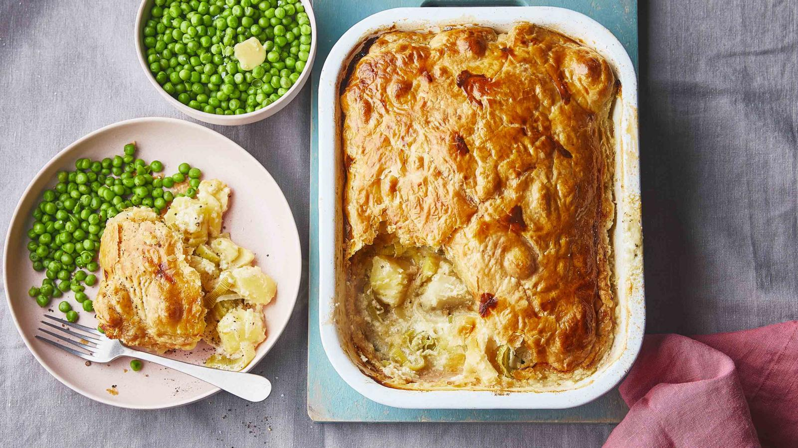

Easy Cheesy Potato Puff Pie

Description
All the flavours of leek and potato soup but with added cheese and pastry!
This leek, potato and cheese puff pie is the perfect budget winter warm
Ingredients
- 1kg/2lb 4oz potatoes, peeled, cut into cubes and boiled
- 1 large leek, very thinly sliced
- 150g/5½oz mature cheddar, grated
- 1 tsp dried mixed herbs
- 150ml/5fl oz full-fat milk, plus 1 tbsp for brushing
- 100g/3½oz cream cheese
- 320g/11½oz puff pastry sheet
- salt and freshly ground black pepper
- freshly cooked frozen peas, to serve
Steps
- Preheat the oven to 200C/180C Fan/Gas 6. Stir the potatoes, leek, cheddar and herbs together in a large bowl. Season with salt and pepper.
- In a separate bowl, gradually whisk the milk into the cream cheese. Pour the milk mixture into the potato mixture, stirring together until well mixed. Tip into a roughly 31x23cm/12½x9in roasting tin.
- Open out the pastry sheet and lay the pastry on top of the pie filling, tucking the edges into the sides.
- Brush the top with milk and make a couple of slits in the pastry so the steam can escape.
- Bake for 30 minutes until puffed up and golden brown. Serve with the peas.